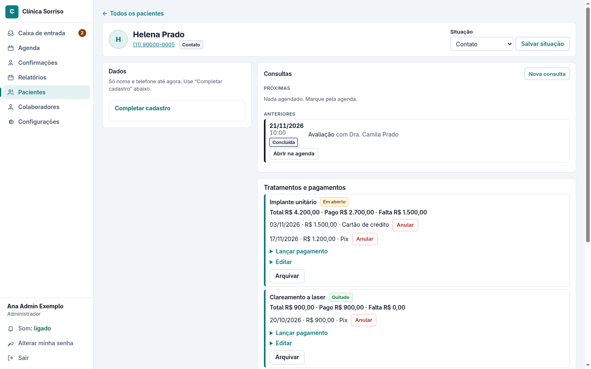

Clínica odontológica
Site calmo, que explica como é a primeira consulta. No painel, a ficha do paciente guarda o que foi combinado e o que já foi pago, e os relatórios mostram consultas por status, profissional e serviço.
- Tela de confirmações do dia
- Tratamentos e pagamentos na ficha
- Retornos vencidos aparecem para a recepção convidar
